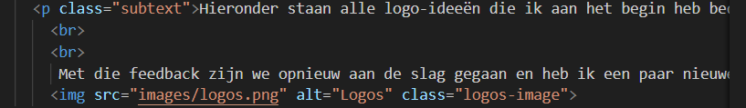

LO2: Development and version control
Development portfolio
Het ging eigenlijk best goed met het maken van mijn portfolio website, maar er was wel iets dat me vrij snel opviel toen ik begon met coderen. Ik had namelijk het idee om hexagons te gebruiken als vorm om tekst op te zetten, maar in de praktijk bleek dat toch een stuk minder handig dan ik had gedacht. Het is veel ingewikkelder dan werken met een rechthoekige vorm, vooral als je meerdere afbeeldingen en stukken tekst dicht bij elkaar wilt plaatsen.
Met een hexagon is het lastig om structuur en consistentie aan te brengen, vooral als je de website responsief wilt maken. De positionering raakte al snel scheef of onlogisch, en dat maakte het bouwen onnodig complex. Daarom weet ik nu al dat ik bij mijn volgende portfolio een design ga kiezen dat praktischer en overzichtelijker is – een ontwerp dat het makkelijker maakt om tekst en afbeeldingen netjes te positioneren.
Hieronder heb ik een aantal code-snippets toegevoegd van stukken code die ik zelf interessant vond of waar ik iets van geleerd heb.
Nav-bar fucties
Een van de dingen waar ik best trots op ben, is de navbar. Daar heb ik een effect toegevoegd waarbij het lijkt alsof een rode kleur je muis volgt. In de JavaScript houd ik de positie van de muis bij, en in de CSS heb ik gezorgd voor een visueel effect dat actief reageert als je over de navbar beweegt.
Het resultaat is dat er een soort lichtcirkel of spotlight met een rode gloed en een gradient naar zwart meebeweegt met je cursor. Dit zie je het beste als je over de tekst in de navbar beweegt – dan lijkt het alsof de kleur je muis echt volgt. Als je dit effect op een lege pagina zonder tekst zou gebruiken, zie je pas dat het eigenlijk gewoon een meebewegende cirkel is. Toch vond ik het een leuk experiment, en ik ben tevreden met hoe het eruitziet.
Daarnaast heb ik ervoor gezorgd dat wanneer je op een item in de navbar klikt, de pagina automatisch naar beneden scrolt naar het juiste onderdeel. Dit heb ik gedaan omdat mijn portfolio geen aparte pagina's heeft, maar alles zich op één lange homepagina afspeelt. Door dit scroll-effect voelt de navigatie toch vloeiend en duidelijk aan.
Hexagons
Voor de positie van de hexagons heb ik gebruikgemaakt van absolute positioning, waarbij ik per hexagon handmatig de positie heb ingesteld. Dit werkte op zich wel, maar het was veel werk en niet zo flexibel.
Als ik dit opnieuw zou moeten doen, zou ik ervoor kiezen om hexagons te maken die allemaal dezelfde grootte hebben, of in ieder geval een gelijk ritme in grootte en opbouw. Op die manier kun je ze namelijk makkelijker in een container zetten en met goede marges en padding werken om ze netjes uit te lijnen. Dat zou het niet alleen veel overzichtelijker maken, maar ook makkelijker om dingen aan te passen als er later nog iets niet klopt.
Zo voorkom je ook dat je alles handmatig moet positioneren met top, left en transform, wat al snel chaotisch wordt – vooral bij grotere schermen of als je het responsief wil maken.
Text spacing
Ik heb ook nog van een klein detail een screenshot gemaakt, namelijk over het gebruik van de
-tag in HTML. Hiermee kun je een soort enter maken in je tekst, waardoor je makkelijk witruimte kunt creëren tussen alinea’s of zinnen.
Eerst probeerde ik gewoon lege regels te laten in de HTML-code, maar dat had geen effect op de weergave van de tekst in de browser. Toen ontdekte ik dat je met
wel die ruimte kunt forceren. Dit helpt enorm bij de leesbaarheid van je tekst, omdat je zo duidelijker onderscheid kunt maken tussen verschillende stukken inhoud.
Het lijkt iets kleins, maar het heeft een groot effect op hoe netjes en overzichtelijk je content eruitziet.

Development
Learn about our code
Marketing
See our strategies